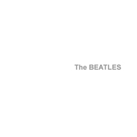
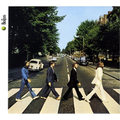
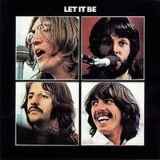

Marcado como o fim da banda, com um álbum cheio de músicas de diferentes gêneros, outro marcando o fim da banda, e um último que visava a volta do rock do começo da década de 60. Álbuns:

The Beatles (1968)

Abbey Road(1969)

Let It Be (1970)